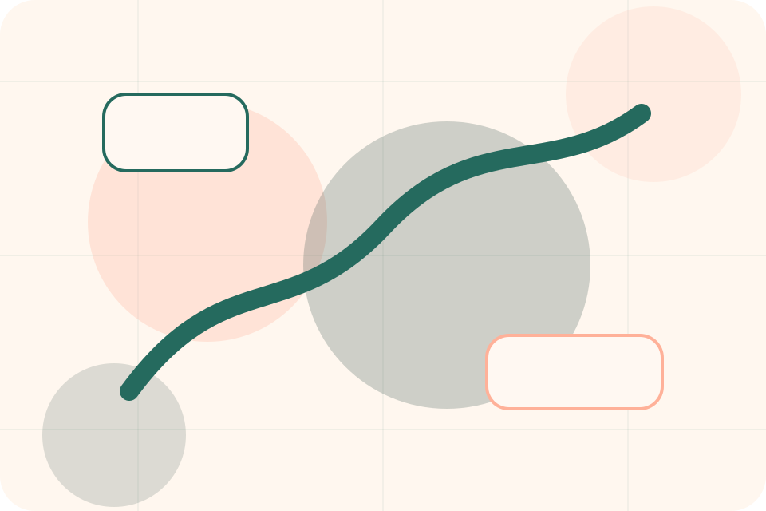
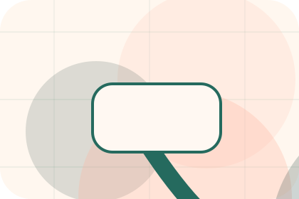
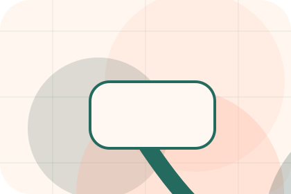
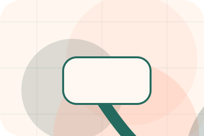
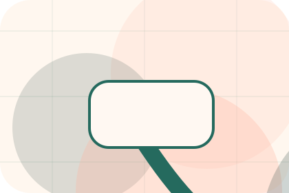
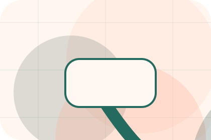
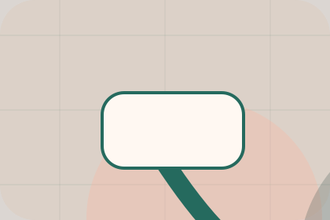

Team / 01
Team by Paw
Team shaped for pets, animals & veterinary services decisions.
Team opens as a clear pets decision hub: what Paw offers, who it helps, why it matters, and which route to take first.
The first screen combines positioning, proof, primary action, and fast internal navigation, so people can act immediately or compare the rest of the team route with context.
Clear intakeHuman follow-upPractical reassurance
Warm appointment hero
Route the care need
Select the closest route and Paw keeps the next step, proof, and follow-up expectation aligned with care and quick triage.

Team / 02
Vets
Vets introduces the people, roles, or specialist credibility behind Paw so the decision feels less anonymous.
The copy ties names, roles, credentials, or availability back to the decision on the page instead of treating profiles as decorative biographies.
Explore Team
Role
The person, team, or specialist function connected to vets is easy to understand.

Credibility
Credentials, responsibilities, or availability are tied to the visitor's decision, not listed for decoration.

Handoff
The section explains how to move from profile interest to a practical conversation or booking path.
Team / 03
Nurses
Nurses introduces the people, roles, or specialist credibility behind Paw so the decision feels less anonymous.
The copy ties names, roles, credentials, or availability back to the decision on the page instead of treating profiles as decorative biographies.
Explore TeamRole
The person, team, or specialist function connected to nurses is easy to understand.
Team / 04
Specialists
Specialists introduces the people, roles, or specialist credibility behind Paw so the decision feels less anonymous.
The copy ties names, roles, credentials, or availability back to the decision on the page instead of treating profiles as decorative biographies.
Explore TeamRole
The person, team, or specialist function connected to specialists is easy to understand.

Credibility
Credentials, responsibilities, or availability are tied to the visitor's decision, not listed for decoration.
Handoff
The section explains how to move from profile interest to a practical conversation or booking path.
Team / 05
Profiles
Profiles introduces the people, roles, or specialist credibility behind Paw so the decision feels less anonymous.
The copy ties names, roles, credentials, or availability back to the decision on the page instead of treating profiles as decorative biographies.
Explore Team- 01
Role
The person, team, or specialist function connected to profiles is easy to understand.
- 02
Credibility
Credentials, responsibilities, or availability are tied to the visitor's decision, not listed for decoration.
- 03
Handoff
The section explains how to move from profile interest to a practical conversation or booking path.
Team / 06
Experience
Experience introduces the people, roles, or specialist credibility behind Paw so the decision feels less anonymous.
The copy ties names, roles, credentials, or availability back to the decision on the page instead of treating profiles as decorative biographies.
Explore TeamRole
The person, team, or specialist function connected to experience is easy to understand.
Credibility
Credentials, responsibilities, or availability are tied to the visitor's decision, not listed for decoration.
Handoff
The section explains how to move from profile interest to a practical conversation or booking path.
Team / 07
Style
Style introduces the people, roles, or specialist credibility behind Paw so the decision feels less anonymous.
The copy ties names, roles, credentials, or availability back to the decision on the page instead of treating profiles as decorative biographies.
Explore Team
Role
The person, team, or specialist function connected to style is easy to understand.
Team / 08
Availability
Availability introduces the people, roles, or specialist credibility behind Paw so the decision feels less anonymous.
The copy ties names, roles, credentials, or availability back to the decision on the page instead of treating profiles as decorative biographies.
Explore TeamRole
The person, team, or specialist function connected to availability is easy to understand.
Credibility
Credentials, responsibilities, or availability are tied to the visitor's decision, not listed for decoration.
Handoff
The section explains how to move from profile interest to a practical conversation or booking path.
Team / 09
Meet
Meet introduces the people, roles, or specialist credibility behind Paw so the decision feels less anonymous.
The copy ties names, roles, credentials, or availability back to the decision on the page instead of treating profiles as decorative biographies.
Explore Team- 01
Role
The person, team, or specialist function connected to meet is easy to understand.
- 02
Credibility
Credentials, responsibilities, or availability are tied to the visitor's decision, not listed for decoration.
- 03
Handoff
The section explains how to move from profile interest to a practical conversation or booking path.
Team / 10
Book Visit
Paw closes the team route with a clear action, a quick reminder of the value, and a low-friction way to book a visit.
Visitors who are ready can use the primary action. Visitors who are still comparing can scan the section links, proof, and support routes before they book a visit.
Book VisitThe final block keeps the choice simple: act now, compare one more proof route, or send enough detail for a focused response.
Book Visitcare and quick triage
Book Visit
A veterinary site with warm urgent-care modules, appointment paths, team proof, and symptom routing. Team ends with a direct path to book a visit, plus enough context for visitors who still need to compare.

Book VisitNotes
Pet health content is general; urgent symptoms require direct veterinary care.